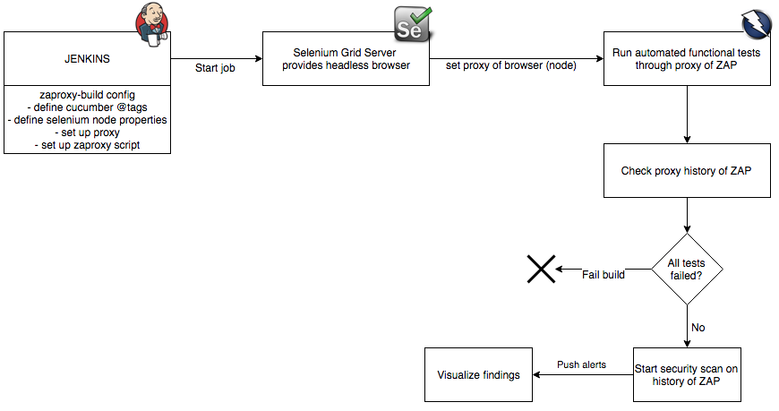

In my previous blog post I presented a simple example on how to run OWASP ZAP together with Jenkins. This set-up would simply spider a target host, collect links and perform an active scan. Obvious downside of this set-up is that it's impossible for ZAP’s spider functionality to find all the links and pages, for example if they are hidden behind logical procedures like forms. This means that ZAP will never be able to completely scan the target application. Fortunately, you could feed ZAP with functional tests so it will find every page. A customer with a large-scaled development environment and build street had the requirement to be able to perform deployments in a single day. In such a fast development process, test automation was the solution to have security checks involved. The customer already had a large amount of regression tests available in Selenium. This needs to be tied to Cucumber and Jenkins, which were already in place. We had the challenge to seamlessly implement our solution within their infrastructure.
To have a more effective security test ideally you would like to run Selenium (regression) tests through ZAP. This gives a more reliable cover of any forms or links which could be missed by ZAP. This makes ZAP more familiar with the target application. If you have these tests already written, by the QA department for example, this blog will show you how to run them through ZAP in an enterprise-friendly solution.
In this example we will use a Groovy script to control ZAP through its API, Selenium to control the web driver, and Cucumber to run the tests with. I recommend using the API web interface of ZAP to easily check the results, find scans and other information about the application.

ZAP can be controlled in many different ways and with different scripting/programming languages. In this example I used Groovy to perform GET requests to the ZAP API. As seen in the diagram above, we want this script to Active Scan functional tests that have passed through ZAP. Below I will provide snippets of the Groovy code that is used to control ZAP.
Create generic method to call API of ZAP:
def ZAPApiCall(url, path, query) {
def ZAProxy = new HTTPBuilder(url)
data = ZAProxy.request(GET, JSON) { req ->
uri.path = path
requestContentType = JSON
uri.query = query
headers.Accept = 'application/json'
// response handler for a successful response code:
response.success = { resp, json ->
assert resp.status == 200
assert resp.contentType == JSON.toString()
return json
}
response.failure = { resp, json ->
throw new RuntimeException("${json}")
}
}
}
def apikey = '<apikey of ZAP>'
def url = '<ip of ZAP node>'
def applicationURL = ""
// Get proxy history (site-tree) of ZAP and filter duplicates
path = '/JSON/core/view/sites'
ZAPApiCall(url, path, null)
def list = new JsonSlurper().parseText(JsonOutput.toJson(data))
def sites = list.sites
sites.unique()
// Check if applicationURL is found in the proxy history (site-tree) of ZAP.
println "Checking proxy-history of ZAP"
if (!sites.isEmpty()) {
println "Setting option to scan all headers of request.."
path = '/JSON/ascan/action/setOptionScanHeadersAllRequests'
query = [apikey: "${apikey}", Boolean: "true"]
ZAPApiCall(url, path, query)
// Exclude certain sites from the the scan
String[] excludeSites = ["http://<sitestoexclude>.*"]
for (String item : excludeSites) {
regexSite = item
path = '/JSON/ascan/action/excludeFromScan'
query = [apikey: "${apikey}", regex: regexSite]
ZAPApiCall(url, path, query)
}
// If multiple applicationURLs are found, perform Active Scan on all URLS for (String item : sites) { applicationURL = item // Only scan sites which end with .<yourdomain> if (!applicationURL.endsWith(".<yourdomain>")) { continue; }// Start Active scan println "Starting Active Scan" path = '/json/ascan/action/scan' query = [apikey : "${apikey}", url: "${applicationURL}", recurse: 'true', inScopeOnly: 'false'] ZAPApiCall(url, path, query) def scanId = data.scan println "Started Active Scan: ${scanId} on target: ${applicationURL}" def responseText = "no responses yet" def responseCode = 200 // 10 second wait times 6 for one minute times number of minutes. def maxRetries = 30 * 30 def retryNum = 0 // Poll status of scan while (!responseText.contains("100") && responseCode == 200) { if (retryNum >= maxRetries) { throw new RuntimeException("ZAP Active Scanner has not completed after XXX minutes. Exiting.") } //10 seconds wait time sleep 10000 path = '/json/ascan/view/status/' query = [scanId: "${scanId}"] ZAPApiCall(url, path, query) retryNum += 1 responseText = data.status println "Scan in progress: ${responseText}" } // Fetch alerts of the scan path = '/json/core/view/alerts/' query = [baseurl: "${applicationURL}"] ZAPApiCall(url, path, query) def dataAlertList = data.alerts; for (alert in dataAlertList) { //remove not needed elements from alerts alert.remove("description") alert.remove("solution") alert.remove("reference") alert.remove("wascid") alert.remove("other") } // alerts are stored in data object -> print out in console: print data } // Clean up scan and logs -> Create new session println "Creating new sessions and clearing previous session data" path = '/JSON/core/action/newSession' query = [apikey: "${apikey}", overwrite: 'true'] ZAPApiCall(url, path, query) } else { println "All tests have failed or ApplicationURL not found in proxy history of ZAP, therefore Active Scan will not be started" }
Next step is to configure Selenium to run through ZAP. If you are familiar with Selenium Grid and want to run your own Node make sure to set a unique value to your specific node (like version number 99). This will be used later to specify the specific node that you want the tests to run on.
The following configuration (capabilities) should be added in the code to set a proxy on the Node and make sure that the version numbers match up. This can be done in various ways, the example below could be added to the Selenium tests you already have. Additionally you should configure the browser to ignore certificate errors since ZAP will sign certificates with its own generated root CA.
// Instead of defining the proxy here, you could also use the properties file. String httpProxy = “localhost:8080”;private DesiredCapabilities getDesiredCapabilities() { DesiredCapabilities desiredCapabilities; if ("firefox".equals(browser)) { desiredCapabilities = DesiredCapabilities.firefox(); desiredCapabilities.setCapability(FirefoxDriver.PROFILE, FirefoxConnection.createProfile());
} else if ("chrome".equals(browser)) { desiredCapabilities = DesiredCapabilities.chrome(); desiredCapabilities.setVersion(browserVersion); desiredCapabilities.setCapability("chrome.switches", Arrays.asList("--ignore-certificate-errors"));
} else if ("internetexplorer".equals(browser)) { desiredCapabilities = DesiredCapabilities.internetExplorer();
} else { throw new IllegalArgumentException(browser + " not supported"); } desiredCapabilities.setCapability(CapabilityType.PROXY, createProxy()); desiredCapabilities.setPlatform(getPlatform(platform)); return desiredCapabilities; }
public Proxy createProxy() { return new Proxy() .setProxyType(MANUAL) .setHttpProxy(httpProxy); }
Now the code is ready, the Selenium node and Zaproxy can be started:
$ java -jar selenium-server-standalone-2.44.0.jar -role node -hub http://localhost:4444/grid/register -browser browserName=chrome,version=99
Make sure that ZAP is running on the same server as the Selenium Node. Start ZAP with following command:
$ ./ZAP.sh -daemon -host 0.0.0.0 -config api.key=<apikey>
In Jenkins, add the Cucumber tag(s) of the regression tests that you would like to run through ZAP. Make sure that the code to set up the proxy setting and fetch the node from Selenium Grid before running any functional tests. After the functional tests are finished kick off the Groovy script to Active Scan URLs found by ZAP.
I originally wrote this article for Securify B.V. Read more.